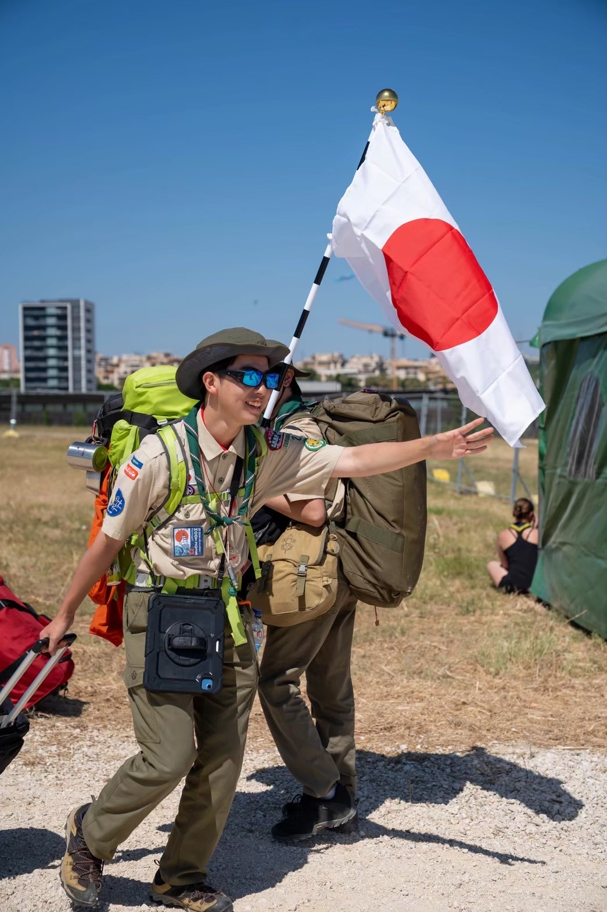

Tomoya NARITA
Linguist / Dancer
Exploring the logical principles that entail linguistic diversity. Constructing minimal models that capture essential phenomena and invite logical reflection.

Linguist / Dancer
Exploring the logical principles that entail linguistic diversity. Constructing minimal models that capture essential phenomena and invite logical reflection.